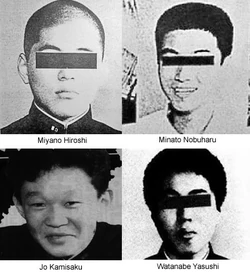
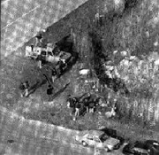
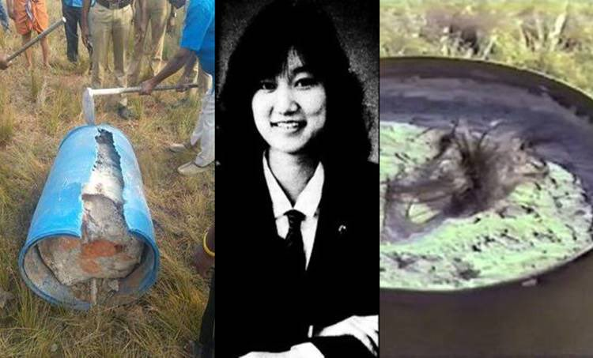
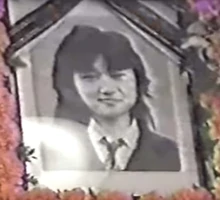
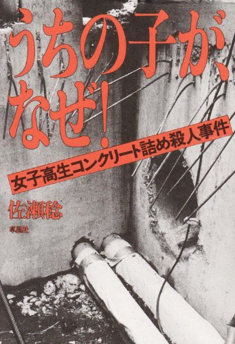
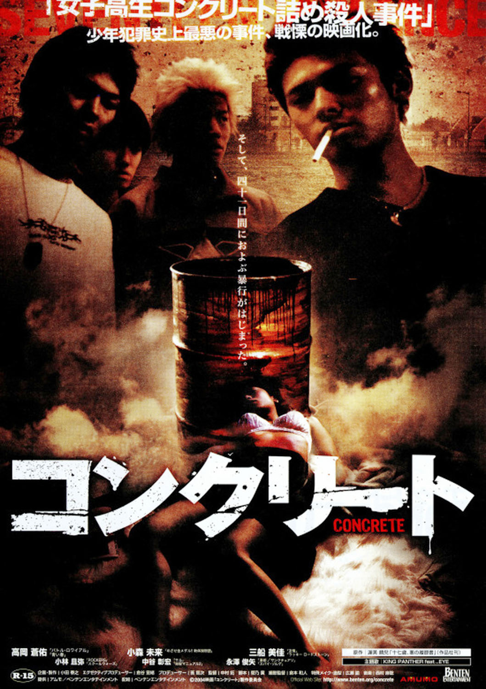
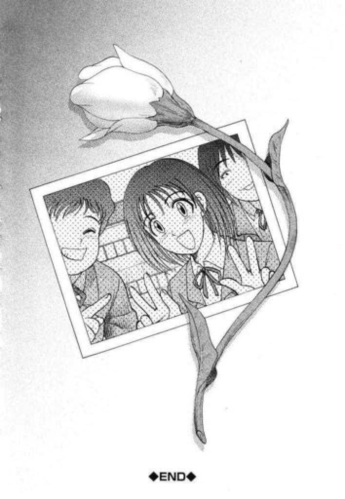

El inicio de la agonía
Junko contaba con 17 años cuando ocurrieron los hechos, era una chica sencilla, hija de una mujer trabajadora, no tenía novio y tampoco solía tomar o salir a fiestas. Era muy apreciada por sus amigas y vecinos. Por desgracia para ella, había una persona que no la apreciaba tanto; esa persona era
Miyano Hiroshi, un compañero de clase que era miembro del bajo nivel de la Yakuza, la temible Mafia Japonesa.
Hiroshi sintió una fuerte atracción por Junko, pero ella no le correspondía. Este hecho, sumado a la especie de inmunidad que Hiroshi disfrutaba por ser miembro de la Yakuza, le incitaron a cometer los actos que a continuación describen. El grupo tenía antecedentes de violación colectiva, y recientemente habían secuestrado y violado a otra niña, aunque luego fue liberada. Desde octubre de 1988 Junko estaba trabajando a tiempo parcial en una fábrica de moldes de plástico para ahorrar dinero para un viaje de fin de curso con sus amigas.
En noviembre de 1988, cuatro jóvenes (
Miyano Hiroshi, 18 años en el momento del crimen;
Jo Kamisaku, un compañero adoptado tras su salida de prisión, de 17;
Minato Nobuharu, de 16; y
Watanabe Yasushi, de 17) vieron a Junko en bicicleta después de acabar su ronda como empleada a tiempo parcial. Hiroshi ordenó a Nobuharu golpear la bici y escapar, raptaron y escondieron a la chica en una vivienda de la ciudad de Adachi (Tokio, Japón), concretamente en el domicilio de los padres de Nobuharu.

Con el fin de evitar una investigación policial, Hiroshi obligó a Junko a llamar a sus padres para decirles que se había marchado de casa por voluntad propia junto a un amigo y que no se preocupen, que no corría ningún peligro. Además, Junko fue obligada a fingir ser la novia de Nobuharu cuando sus padres estaban presentes, una farsa que apenas se sostenía unos pocos días. Junko pidió ayuda a los padres de Nobuharu, pero ninguno accedió a ayudarla por el temor a las amenazas de Hiroshi.
Esta situación se extendió durante 44 días interminables en los que los 4 jóvenes le infligieron las más crueles torturas y vejaciones. Según la propia confesión de los jóvenes en el juicio, los cuatro raptores mantuvieron una sesión de Junko desnuda todo el tiempo, la violaban por vagina y ano (Furuta fue violada por aproximadamente 100 hombres en esos 44 días), le propinaban palizas colgándola como si fuera un saco de boxeo, le privaron de alimento (solo bebiendo su propia orina y comiendo cucarachas), la obligaban a tocarse antes de las violaciones mientras que tomaban cerveza, le presentaban múltiples objetos por sus partes (incluyendo petardos, tijeras, botellas, barras de hierro e, incluso, una lámpara caliente que se rompió en su vagina). Le amputaron un pezón con unos alicates, le lanzaban mancuernas al contrario mientras permanecía la tumbada boca arriba, le rompieron los huesos de la mano a pisotones, la metieron en el congelador, le quemaron los párpados y así un sin fin de torturas más. El estado físico de Junko estaba tan deteriorado que los jóvenes perdieron interés sexual en ella.
El 4 de enero de 1989, Junko fue retada a jugar al mahjong (juego de mesa de origen chino), saliendo victoriosa. Esto causó la ira de los jóvenes, los cuales le dieron una última paliza para luego rociar sus extremidades, tronco y cara con líquido inflamable y prenderle fuego. Furuta murió 2 horas después a causa de un estado de shock. Los asesinos escondieron su cadáver en un bidón lleno de cemento, el cual fue abandonado en Koto, Tokio.
Lugar donde enterraron a la joven,en un barril de concreto:


Arresto de los cuatro
En marzo de ese año, un informante infiltrado en la Yakuza delató a los asesinos siendo arrestados y puestos a disposición judicial.
Sin embargo, los periodistas de la revista Shūkan Bunshun descubrieron sus identidades y las publicaron. Declararon que, dada la gravedad del delito, los derechos humanos no son necesarios para esas bestias, publicando así los nombres de los cuatro.
En julio de 1990, un tribunal condenó a Hiroshi Miyano, el presunto líder del crimen, a 17 años de prisión. Apeló su sentencia, pero el juez Ryūji Yanase del Tribunal Superior de Tokio lo sentenció a tres años de prisión adicionales. La sentencia de 20 años que recibió es la segunda sentencia más alta posible después de la cadena perpetua. Tenía 18 años en el momento del asesinato. Según informes, la madre de Miyano envió a los padres de Furuta 50 millones de yenes (USD 425,000), después de vender su casa familiar. En 2004 intentó solicitar la libertad condicional por buena conducta pero se le fue denegada debido a otro incidente. El 10 de enero de 2013, Miyano fue arrestado de nuevo por fraude. Debido a evidencia insuficiente, el 31 de enero de ese mismo año, fue liberado sin cargos.
Nobuharu Minato, quien originalmente recibió una sentencia de cuatro a seis años, fue nuevamente sentenciado a cinco a nueve años por el juez Ryūji Yanase en apelación. Tenía 16 años en el momento del asesinato. Los padres y el hermano de Nobuharu no fueron acusados. Los padres de Furuta estaban consternados por las sentencias recibidas por los asesinos de su hija, y ganaron una demanda civil contra los padres de Nobuharu Minato, en cuya casa se cometieron los crímenes. Después de su liberación, Minato se mudó con su madre. Él no ha trabajado desde entonces.
Yasushi Watanabe, que originalmente fue sentenciado a tres o cuatro años de prisión, recibió una sentencia mejorada de cinco a siete años. Tenía 17 años en el momento del asesinato. Después de su liberación, se casó con una mujer rumana.
Por su participación en el crimen, Jō Ogura permaneció ocho años en una prisión juvenil antes de ser liberado en agosto de 1999. Tenía 17 años en el momento del asesinato. Después de su liberación, se dice que se jactó de su papel en el secuestro, violación y tortura de Furuta. En julio de 2004, fue arrestado por agredir a Takatoshi Isono, un conocido con quien pudo haber tenido un amorío con su novia. Jō rastreó a Isono, lo golpeó y lo metió en el maletero de su coche. Lo llevó de Adachi al bar de su madre en Misato, donde presuntamente golpeó a Isono durante cuatro horas. Durante ese tiempo, Ogura amenazó repetidamente con matar al hombre, diciéndole que ya había matado antes y sabía cómo salirse con la suya. Fue arrestado y condenado a siete años de prisión por la agresión y desde 2011 ha permanecido libre. La madre de Ogura presuntamente destrozó la tumba de Furuta, afirmando que había arruinado la vida de su hijo. También se informó que Ogura había utilizado los ahorros de su padre (dinero originalmente destinado a la familia de Furuta), comprando y consumiendo una cantidad de artículos de lujo.
En general, se consideraba que las sentencias eran demasiado leves para los delitos cometidos, sin embargo, las cuatro personas estaban protegidas por disposiciones especiales aplicadas a personas de 18 años o menos. Si hubieran tenido un par de años más, Hiroshi Miyano sin duda habría recibido la pena de muerte por ahorcamiento, mientras que los otros tres probablemente habrían sido sentenciados a cadena perpetua.
Durante la sentencia, el juez comentó que
"la violencia excepcionalmente grave y atroz" había sido afectada a la víctima, y que Junko Furuta había sido "asesinada brutalmente a la temprana edad de 17 años, que su alma debe estar vagando en tormento". Al escuchar los detalles de la brutal violación y tortura, un espectador en la galería se desmayó. Según los informes, la madre de Furuta sufrió una crisis mental que requirió tratamiento psiquiátrico. Algunos de los amigos de los torturadores han sido identificados oficialmente, incluyendo a Tetsuo Nakamura (ahora Tetsuo Yamada) y Koichi Ihara, quienes fueron acusados de violación, después de que su ADN fue encontrado en el cuerpo de la víctima. Koichi Ihara supuestamente fue intimidado para violar a Furuta. Después de dejar la casa de Minato, le contó a su hermano sobre el incidente. Su hermano posteriormente se lo contó a sus padres, quienes contactaron con la policía.
Repercusión nacional y funeral de la joven
Lo horrible del caso ha llamado la atención de varios medios y se han hecho desde películas hasta cómics, pero, lamentablemente, la versión más fiel a lo que realmente ocurrió es un documental hecho poco después de la primera sentencia (en 1989) y solo se puede encontrar en japonés.
En él se puede ver el funeral de Junko. Sus compañeras la despidieron entre llantos, diciendo:
“Jun-chan, bienvenida de nuevo. Nunca soñé que te veríamos de nuevo de esta manera. Debes haber padecido tanto dolor... tanto sufrimiento... La felicidad que todos sentimos en el festival escolar se veía realmente bien en ti. Nunca te olvidaremos. He oído que el director te ha presentado un certificado de graduación. Entonces nos graduamos juntos, todos nosotros. Jun-chan, no hay más dolor, no más sufrimiento. Por favor, descansa en paz...”.

Video del funeral de Junko:
El jefe a tiempo parcial de Furuta, para quien trabajó antes de su secuestro y asesinato, le presentó a sus padres el uniforme que solía usar como empleada de tiempo completo. El uniforme fue colocado en su ataúd. La ubicación donde se descubrió el cuerpo de Furuta se ha desarrollado desde entonces y actualmente es un parque.
Influencias
Existen dos adaptaciones a la gran pantalla que narran, en mayor o menor medida, la historia de Junko Furuta:
- Joshikôsei konkuriito-dume satsujin-jiken (Caso de asesinatos de niñas de la escuela secundaria con envoltura de hormigón) del 1995.
- En 1995 y Konkurîto (Colegiala en Cemento por Hiromu Nakamura) del 2004.


- La banda de metal japonesa "The GazettE" proyectó en un videoclip en homenaje a Junko Furuta titulado "Taion" (temperatura en español).
Videoclip:
https://youtu.be/zYvIvO5q_1c
- Un manga inspirado en el caso Junko Furuta fue publicado en 2004. Se titula Shin Gendai Ryoukiden (High School Girl in Concrete) y está dibujado por Uziga Waita donde la joven se llama Youko Tomioka, el manga contiene detalles bastante gráficos y desagradables (no buscarlo en caso de sensibilidad).
